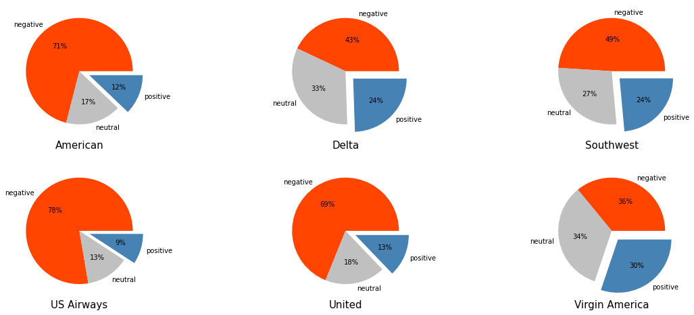
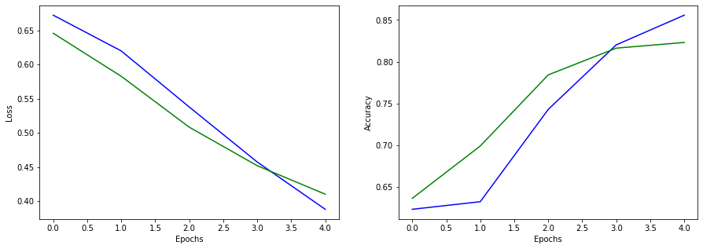
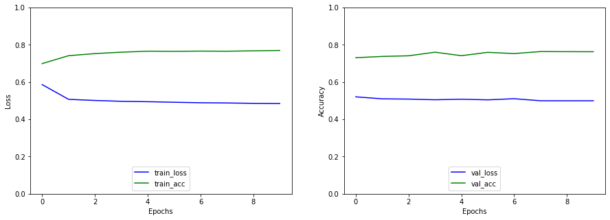
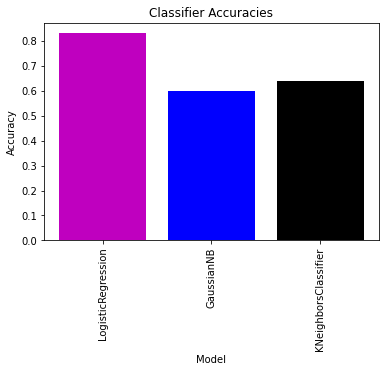

Project Overview
Introduction: In the ever-evolving landscape of social media, platforms like Twitter have become powerful arenas for expressing sentiments across diverse subjects. This project focuses on harnessing the wealth of sentiment data embedded in tweets related to major US airlines. The goal is to conduct sentiment analysis, providing valuable insights for organizations looking to analyze and improve their products and services based on customer feedback.
Dataset Overview: The dataset, sourced from Twitter, contains tweets dating back to February 2015 about major US airlines. Each tweet is categorized as positive, negative, or neutral sentiment. With 15 columns, including tweet ID, sentiment confidence, airline information, and more, the dataset offers a comprehensive view for sentiment analysis. Dataset link
Purpose: This project aims to predict sentiments (positive or negative) from the airline-related tweets. By leveraging various classifiers such as Neural Networks with Word Embeddings, Logistic Regression with CountVectorizer(), KNN, and Naive Bayes, the analysis seeks to determine the most effective approach for sentiment prediction. The ultimate objective is to assist airlines in understanding customer sentiments and making informed decisions to enhance customer experience.
Approach: The project unfolds in a series of notebooks, each focusing on specific aspects of sentiment analysis. Visualizations provide an initial exploration, while subsequent notebooks delve into model training using different techniques, including Word Embeddings, CountVectorizer(), and TfidfVectorizer(). Results indicate that Neural Networks with Word Embeddings outperform other approaches, emphasizing the significance of specific methodologies in sentiment prediction. Logistic Regression with CountVectorizer() stands out with superior accuracy compared to other classifiers. This comprehensive approach provides a nuanced understanding of sentiment analysis on Twitter airline reviews, offering valuable insights for organizations to refine their strategies based on customer feedback.
Project information
- Tools Used
- - Python
- Technologies Used
- - Numpy
- - Pandas
- - scikit-learn
Sentiment Distribution Across Airlines: Pie Chart Analysis
Training neural network model using Word Embeddings
Training neural network model using Tfidf Vectorizer
Training varied classifiers using Count Vectorizer
